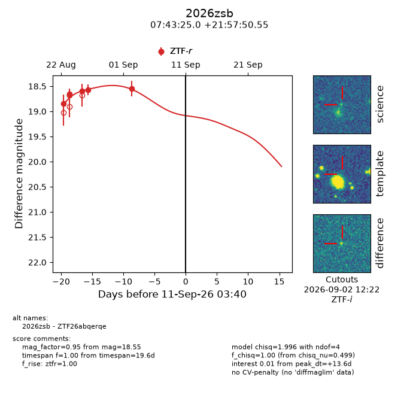
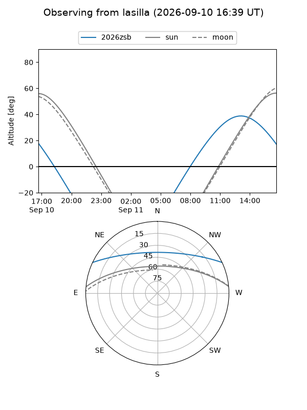
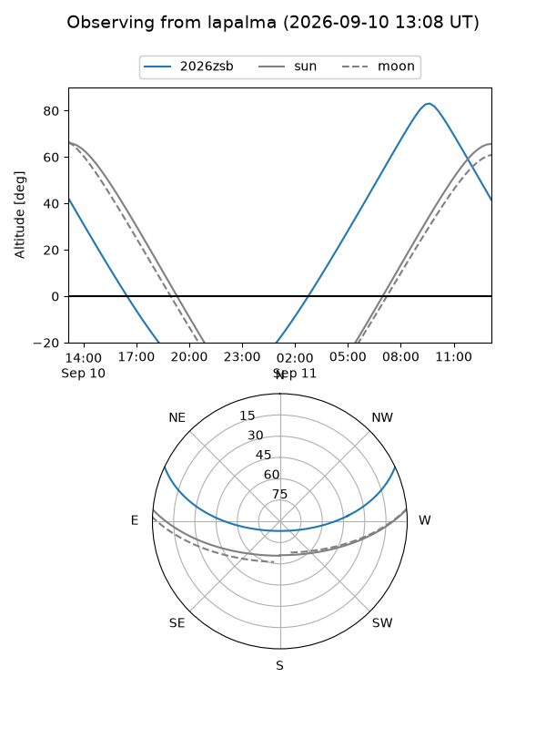
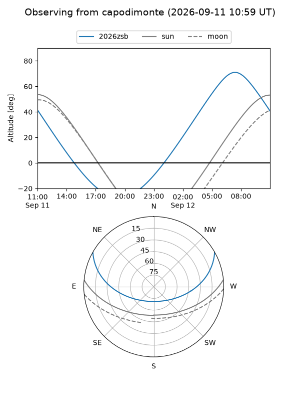
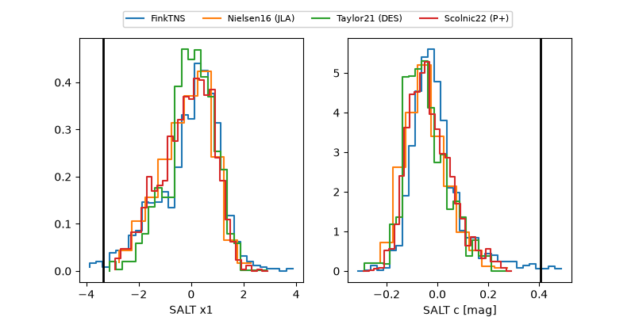

2026zsb
Target 2026zsb at 2026-09-11 14:47
Aliases and brokers:
FINK-ZTF: ztf.fink-portal.org/ZTF26abqerqe
Lasair-ZTF: lasair-ztf.lsst.ac.uk/objects/ZTF26abqerqe
ALeRCE-ZTF: alerce.online/object/ZTF26abqerqe
YSE-PZ: ziggy.ucolick.org/yse/transient_detail/2026zsb
TNS name: wis-tns.org/object/2026zsb
Direct TNS query: direct search
alt names
ZTF26abqerqe (ztf,fink_ztf)
2026zsb (tns,yse)
Coordinates:
equatorial (ra, dec) = 115.8542,+21.96404
equatorial (HMS+DMS) = 07:43:25.00,+21:57:50.55
galactic (l, b) = (198.1896,+20.86379)
Flags:
TNS type: nan
peak dt: +14.1
Photometry:
last ztfr=18.55
6 ztfr detections
Lightcurve

Visibility



Additional plots
